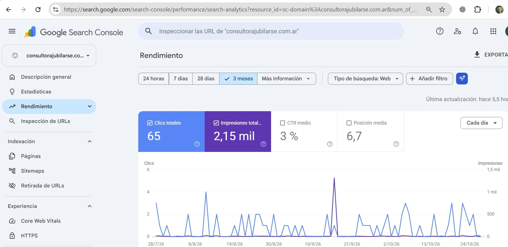

Consultora Jubilarse
Sitio público y herramientas de gestión desarrollados como partes de un mismo proyecto.
Necesidad planteada
- Un sitio web con identidad propia. Acompañar la estrategia de marketing digital con una web que reflejara la identidad de la consultora y presentara sus servicios.
- Una agenda adaptada al equipo. Reemplazar el uso de Google Calendar, que había llegado al límite de lo que necesitaban, y reducir el trabajo manual de anotaciones y recordatorios.
- Una base de datos de clientes y turnos. Identificar a cada cliente, vincular sus turnos y contar con información organizada para personalizar la atención.
- Estadísticas para la gestión. Analizar los datos de los turnos agendados: consultas, asistencias, ausencias y clientes particulares o vinculados a empresas.
- Comunicaciones automáticas. Poder enviar correos a los clientes, por ejemplo, con recordatorios de sus turnos.
Tocá las capturas para ampliarlas.
Mostrar quiénes son y qué logran.
Un sitio institucional con la identidad de Consultora Jubilarse, sus servicios y su equipo. La galería de jubilados permite mostrar el resultado final del acompañamiento previsional.
El recorrido se completa con testimonios, apariciones en medios, preguntas frecuentes y la solicitud de turnos.
www.consultorajubilarse.com.arTocá las capturas para ampliarlas. Agenda con apellidos difuminados.
Una agenda para todo el equipo.
La herramienta reúne la agenda de turnos, clientes y pagos. Cada integrante puede trabajar dentro de los circuitos de la consultora, con una sección de configuración para actualizar la información y las opciones de gestión.
Las estadísticas permiten seguir quiénes consultan, quiénes asisten y quiénes no, y conocer la composición de clientes por empresa o como particulares.
SEGUIMIENTO DEL SITIO
Datos para acompañar
la evolución de la web.
El proyecto también integra Google Search Console y Google Analytics para seguir la presencia del sitio en Google y las visitas a la web.
Search Console permite revisar impresiones, clics y consultas de búsqueda. Google Analytics complementa esa lectura con información sobre el tráfico y la navegación.
Conocé el trabajo de marketing digital ↗
SOLUCIÓN IMPLEMENTADA
Resultados logrados.
Una web con identidad propia
El sitio refleja la identidad del cliente, presenta sus servicios y muestra el trabajo del equipo y las historias de quienes se jubilan.
Agenda compartida y a medida
Una herramienta para gestionar la agenda completa e incluir a todo el equipo, con circuitos que se fueron perfeccionando a partir del uso.
Clientes, pagos y configuración
Secciones para administrar la información de clientes, registrar pagos y actualizar las opciones que utiliza la consultora en su trabajo cotidiano.
Estadísticas de atención
Información para seguir consultas, asistencias y ausencias, y analizar los clientes particulares y los vinculados a cada empresa.
Seguimiento de la presencia digital
Integración con Google Search Console y Google Analytics para observar búsquedas, clics y visitas al sitio.
Una base para seguir creciendo
Arquitectura preparada para incorporar nuevos módulos y acompañar las próximas necesidades de la consultora.
PRÓXIMOS DESARROLLOS
Lo que viene.
Próximos pasos para ampliar la plataforma y automatizar la atención digital.